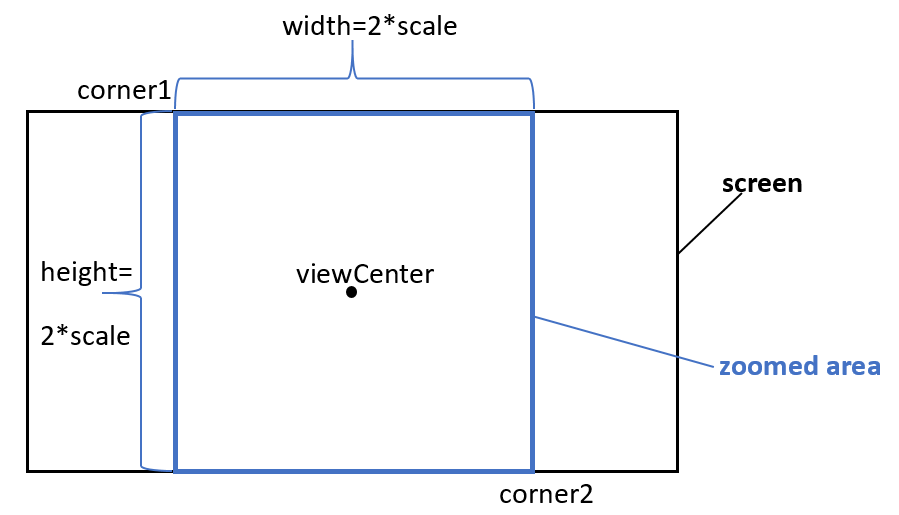

Today, Valerii Nozdrenkov shares a powerful solution to save and restore the complete 3D view camera settings, and Ehsan Iran-Nejad publishes his set of Revit cheat sheets:
Valerii Nozdrenkov shared a powerful solution for serialising the 3D view camera settings in a series of comments, nicely complementing previous explorations on:
ViewOrientation3DQuestion: I have a question about View3D camera settings.
I want to serialize view 3D camera orientation.
It works fine if a projection mode is perspective.
When I zoom in or out, the method GetOrientation gives correct values for perspective camera (the position of the camera is changed), but in orthographic projection mode, GetOrientation always returns the same value regardless of zoom in/out (position of the camera is changed), so I can't recreate saved camera orientation in orthographic mode. There must be another transformation to apply, but I don't know where to take it from.
Currently, I need to change position manually in order to apply changes made by zooming in or out.
I found, there is a method GetZoomCorners of class UIView; this is a bounding box.
Its values change after zooming in/out, but how can I move the EyePosition accordingly?
Any suggestions?
Answer: I investigated the problem of saving and restoring the current Revit View 3D. For a perspective projection mode, it was very simple: just save camera parameters and then restore them. But for orthographic projection mode, I found that the camera parameters are not changed after zooming or panning the model; compare the following two figures.
Before:
Camera parameters before zooming and panning
After:
Camera parameters after zooming and panning
After desperate Googling, I found the solution of this task in GitHub, in the RevitView.cs module of the BCFier project by @mgrzelak.
The idea is:
Saving:
Get corners of the active UI view Corner1 {x1,y1,z1} and Corner2 {x2,y2,z2}
IListviews = uidoc.GetOpenUIViews(); UIView currentView = views.Where(t => t.ViewId == view3D.Id).FirstOrDefault(); //Corners of the active UI view IList corners = currentView.GetZoomCorners(); XYZ corner1 = corners[0]; XYZ corner2 = corners[1];
Calculate center point {0.5(x1+x2),0.5(y1+y2),0.5(z1+z2)}
double x = (corner1.X + corner2.X) / 2; double y = (corner1.Y + corner2.Y) / 2; double z = (corner1.Z + corner2.Z) / 2; //center of the UI view XYZ viewCenter = new XYZ(x, y, z);
Calculate diagonal vector
diagVector = Corner1-Corner2={x1-x2,y1-y2,z1-z2}
XYZ diagVector = corner1 - corner2;
Get up and right vectors
ViewOrientation3D viewOrientation3D = view3D.GetOrientation(); XYZ upDirection = viewOrientation3D.UpDirection; XYZ rightDirection = forwardDirection.CrossProduct(upDirection);
Calculate height=abs(diagVector*upVector);
double height = Math.Abs(diagVector.DotProduct(upDirection));
Find scale = 0.5 * height
But, the provided solution doesn’t work correctly if the height > width.
So, we need to take into account both height and width:
double height = Math.Abs(diagVector.DotProduct(upDirection)); double width = Math.Abs(diagVector.DotProduct(rightDirection));
Then we have to find the minimal minside = min(height,width)
double minside = Math.Min(height, width);
scale = 0.5 * minside
Save center point (eyePosition=viewCenter), upDirection, forwardDirection and scale.
Restoring is the same as in provided above link to GitHub project:
Move the camera to preciously saved eyePosition
var orientation = new ViewOrientation3D(eyePosition, upDirection, forwardDirection); view3D.SetOrientation(orientation);
Calculate corners of square
Upper left:
Corner1 = eyePosition+scaleupVector-scalerightVector
Lower right:
Corner2 = eyePosition-scaleupVector+scalerightVectorXYZ Corner1 = position + upDirection scale - uidoc.ActiveView.RightDirection * scale; XYZ Corner2 = position - upDirection scale + uidoc.ActiveView.RightDirection * scale;
ZoomCorners
ZoomAndCenterRectangle(Corner1, Corner2); uidoc.GetOpenUIViews().FirstOrDefault(t => t.ViewId == view3D.Id).ZoomAndCenterRectangle(Corner1, Corner2);
Here are two more figures illustrating the scale calculation and zooming corners:
Scale calculation
Zooming corners
I prepared a sample project fully implementing this task to share in the RevitOrthoCamera GitHub repository.
Very many thanks indeed to Valerii for all his valuable work researching and documenting this!
Ehsan @eirannejad Iran-Nejad shares his Revit cheat sheets for all to enjoy:
Here are all the Revit cheat sheets I made in the past years to make life easier working with Revit. Want to add yours as well?!